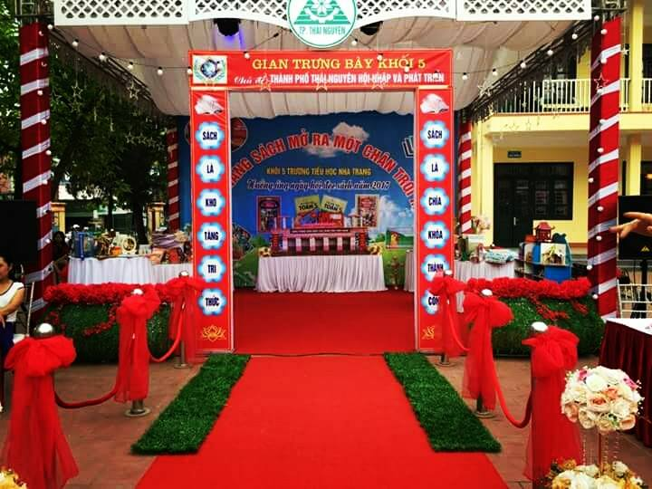
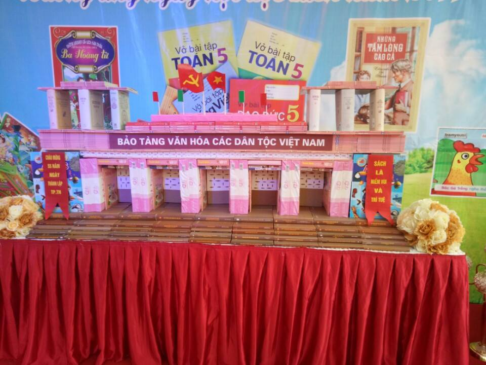
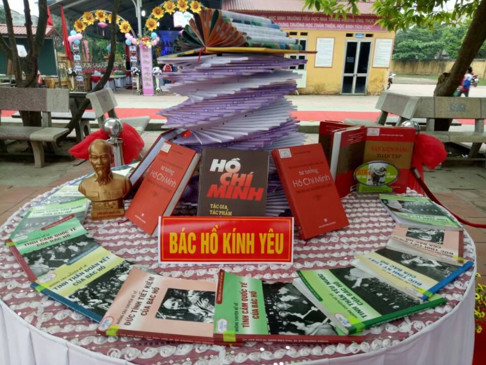
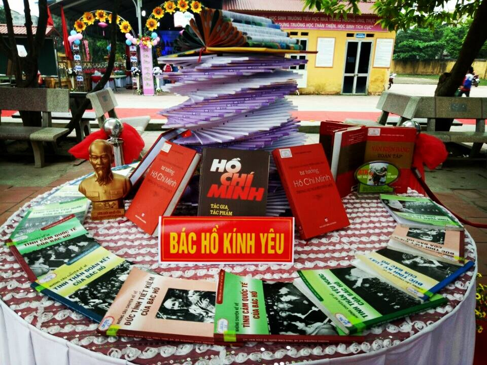
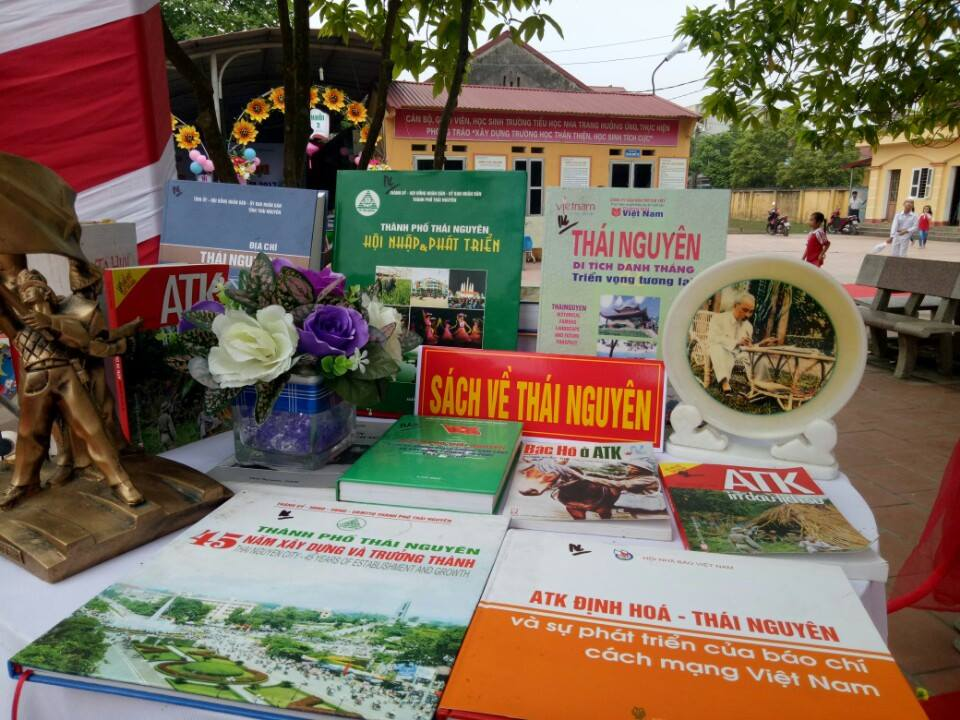
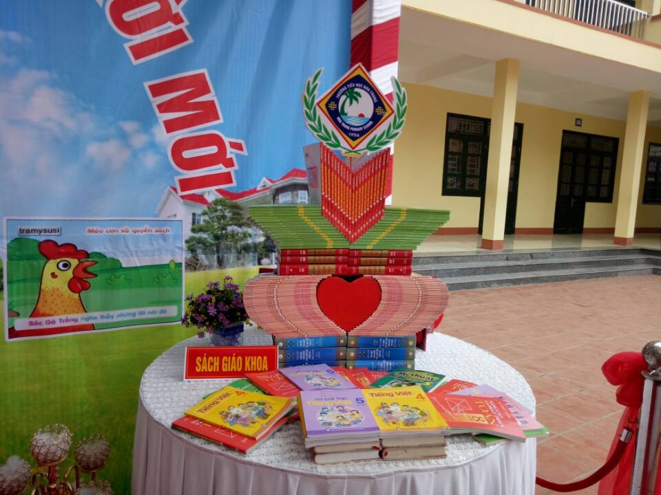
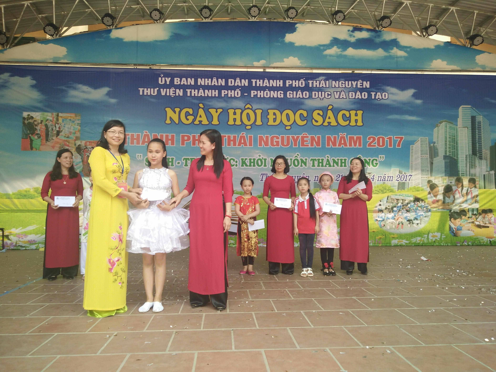

Không gian trưng bày sách khối 5: “Thành phố Thái Nguyên hội nhập và phát triển”

Sáng ngày 21/4/2017, tại trường Tiểu học Nha Trang đã diễn ra Ngày hội đọc sách năm 2017. Để hưởng ứng Ngày hội đọc sách, cô và trò Khối 5 tham gia gian trưng bày sách nghệ thuật với chủ đề "Thành phố Thái Nguyên hội nhập và phát triển".
Với chủ đề này, thầy và trò khối 5 xếp thành công mô hình "Bảo tàng Văn hóa các dân tộc Việt Nam" - Đây là một công trình kiến trúc đẹp và là niềm tự hào của mỗi người dân Thái Nguyên. Nơi đây hội tụ đặc trưng văn hóa của các vùng, miền. trưng bày hơn 10.000 hiện vật, tài liệu di sản văn hoá của 54 dân tộc Việt Nam. Hiện nay Bảo tàng văn hoá các dân tộc Việt Nam đã thu hút nhiều khách trong và ngoài nước đến thăm quan và tìm hiểu về bản sắc văn hoá các dân tộc Việt Nam.

Bên cạnh mô hình chính, chúng tôi đã dùng sách xếp thành những mô hình nghệ thuật sáng tạo, đặc sắc thể hiện rõ một Thái Nguyên đang trong quá trình xây dựng, hội nhập và phát triển.
Xung quanh mô hình chính là một không gian sách dành cho bạn đọc. Đến đây bạn đọc có thể tìm cho mình những cuốn sách hay và bổ ích với các loại sách: như sách về Bác Hồ, về Thái Nguyên, truyện thiếu nhi, sách giáo khoa,...

Sách viết về Bác Hồ kính yêu


Sách viết về Thái nguyên

Sách giáo khoa
Với những bàn tay khéo léo của cô và trò khối 5 đã tạo nên một không gian trưng bày sách sáng tạo và nghệ thuật, được Ban giám khảo đánh giá cao và trao giải Nhất cho phần thi xếp sách nghệ thuật của khối 5.

Đ/c Nguyễn Thị Linh - Giám đốc thư viện thành phố Thái Nguyên
trao giải Nhất về xếp sách nghệ thuật cho cô và trò khối 5
Ngày hội đọc sách đã khép lại, song sự thành công của ngày hội đã tạo ra một môi trường thân thiện, lành mạnh để giáo viên và học sinh có điều kiện giao lưu, học tập, góp phần nâng cao chất lượng dạy và học, đồng thời tạo ra một không gian trí tuệ bổ ích. Từ đó thúc đẩy phong trào đọc sách trong nhà trường.